The U.S. Segment, including international components, is the forward section of the station including the U.S. Node 1. (Unity). The components in this Segment have U.S. standard berthing ports and an airlock suitable for U.S and Russian space suits.
This segment has external platforms and carriers which are accessible to crew during "Space Walks". They are used to hold equipment and spare parts for external use or to carry science experiments with either deep space or Earth ward views.
The External Stowage Platforms [ESPs] and ExPRESS Logistics Carriers [ELCs] are used to hold spare parts for the station, called Orbital Replacement Units [ORUs] which are attached by Flight Releasable Attachment Mechanisms [FRAMs]. ESPs require power for heaters of some of the stored equipment and ELCs also require power and data interfaces for some of the experiments.
Orbital Replacement Units (ORUs)
Orbital replacement units are elements of the station that can be readily replaced when the unit either passes its design life or fails. They are stored on either the ESPs or ELCs and not inside the pressurised modules.
Examples of ORUs are: pumps, storage tanks, controller boxes, antennas, and battery units. Such units are replaced either by astronauts during space walks or by the station robotic arm [SSRMS].
ORUs are stored on either the External Stowage Platforms [ESPs] or ExPRESS Logistics Carriers [ELCs]
Flight Releasable Attachment Mechanisms (FRAMs)
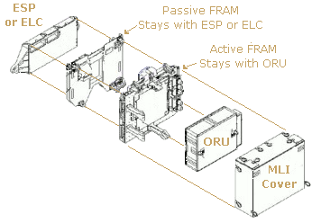
FRAM Structural Components
FRAMs consist of two sections; passive and active. The passive section remains connected to the ESP or ELC and the active section holds the ORU.
The two FRAM sections are connected when the ORU is stored on the ESP or ELC and detached when the ORU is needed.
Location Diagram and ITS Attachment
The diagram below shows the location of the External Stowage Platforms [ESPs] and ExPRESS Logistics Carriers [ELCs].
Click on a component in the diagram to go to its section below.
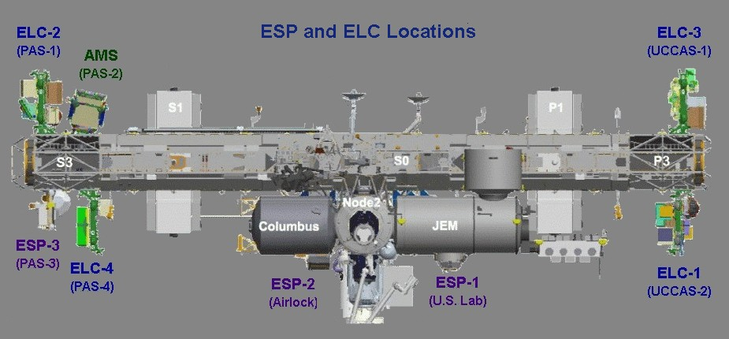
ITS Attachment
All ELCs and one ESP interface directly with the ISS Integrated Truss Structure [ITS] via six 'Common Attach Systems' (CASs).
These are currently used as follows:-
The Starboard 3 [S3] Truss Segment has four attach points called Pay load Attachment Systems (PAS): PAS-1. (facing Zenith) ExPRESS Logistics Carrier 2. [ELC-2] PAS-2. (facing Zenith) Alpha Magnetic Spectrometer [AMS] (Originally intended for ELC-5) PAS-3. (facing Nadir) External Stowage Platform 3. [ESP-3] PAS-4. (facing Nadir) ExPRESS Logistics Carrier 4. [ELC-4]
The Port 3 [P3] Truss Segment has two attach points called Un-pressurised Cargo Carrier Attachment Systems (UCCAS): UCCAS-1. (facing Zenith) ExPRESS Logistics Carrier 3. [ELC-3] UCCAS-2. (facing Nadir) ExPRESS Logistics Carrier 1. [ELC-1]
External Stowage Platforms [ESPs] are pallet like platforms mounted externally on the ISS. They are used to hold spare parts for the station, called Orbital Replacement Units [ORUs]. ORUs are attached to the ESP by Flight Releasable Attachment Mechanisms [FRAMs]. ESPs are not pressurized, but do require electricity to power the heaters of some of the stored equipment.
Three ESPs are currently deployed on the station, as shown on the diagram above, with details in the sections below.
ESP-1 is installed on the port side of the U.S. Laboratory Module (Destiny). ESP-2 attached to the Joint Airlock (Quest) using an ESP Attachment Device (ESPAD). ESP-3 installed on the S3 Truss Segment of the Integrated Truss Structure [ITS].
ESP-1 is unique in shape and smaller than ESP-2 and 3. These were based on the deployable version of the Integrated Cargo Carriers [ICC], which were designed to transport un-pressurized cargo inside the U.S Space Shuttle's cargo bay.
External Stowage Platform 1. [ESP-1]
ESP-1 is unique in shape and smaller than ESP-2 and 3 being 0.46 m wide by 2.4 m long. It is powered from Node 1. (Unity). It was carried into orbit on the underside of an Integrated Cargo Carrier in the shuttle's cargo bay.
It was installed on the port side trunnion pin on the outer hull of the U.S. Laboratory Module (Destiny) on March 13, 2001 during the second EVA of U.S. Space Shuttle mission STS-102 (Flight 5A.1).
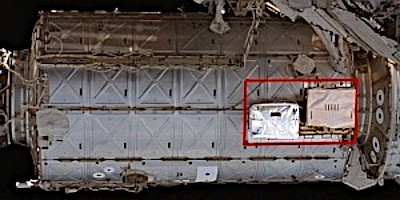
ESP-1 on Destiny Laboratory
ESP-1 has two attach points to store ORUs:
FRAM-1: Pump flow control system (PFCS) added by the U.S. Shuttle STS-102 crew during ESP-1's installation mission.
FRAM-2: Direct-current switching unit (DCSU) added by the U.S. Shuttle STS-100 (Flight 6A) crew in April 2001.
External Stowage Platform 2. [ESP-2]
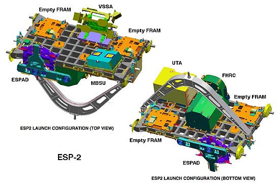
ESP-2 Launch Configuration
ESP-2 during space walk (STS-118)
External Stowage Platform 2. [ESP-2] was based on the deployable version of the Integrated Cargo Carriers [ICC], which was designed to transport un-pressurized cargo inside the U.S Space Shuttle's cargo bay.
It was installed on the Joint Airlock (Quest) using a specialized ESP Attachment Device (ESPAD) in July 2005. This was during the U.S. Space Shuttle's STS-114 (Flight LF-1) mission. The Shuttle's robot arm and two space walkers assisted with the installation.
ESP-2 is larger than ESP-1 being approximately 8.5 feet (2.6 m) long and 14 feet (4.3 m) wide. It is powered from Node 1 (Unity).
ESP-2 has eight FRAM sites creating room for up to eight spare parts (ORUs)
The FRAM locations are as follows:-
FRAM-1 (top side) Failed Pump Module PM-004 relocated here by the ISS Expd. 41 crew in Oct. 2014. FRAM-2 (top side) Direct Current Switching Unit (DCSU) which was added by U.S. Space Shuttle's STS-123 crew. FRAM-3 (top side) CTC-3 container moved here by station robot arm [SSRMS]. FRAM-4 (top side) Main Bus Switching Unit (MBSU) launched with U.S. Space Shuttle's STS-114 (Flight LF-1) on ESP-2. FRAM-5 (keel side) Pitch/Roll Joint (P/R-J) added by U.S. Space Shuttle's STS-123 crew. FRAM-6 (keel side) Main Bus Switching Unit (MBSU) added by U.S. Space Shuttle's STS-120 crew. FRAM-7 (keel side) Flex Hose Rotary Coupler (FHRC) launched with U.S. Space Shuttle's STS-114 (Flight LF-1) on ESP-2. FRAM-8 (keel side) Utility Transfer Assembly (UTA) launched with U.S. Space Shuttle's STS-114 (Flight LF-1) on ESP-2.
External Stowage Platform 3. [ESP-3]
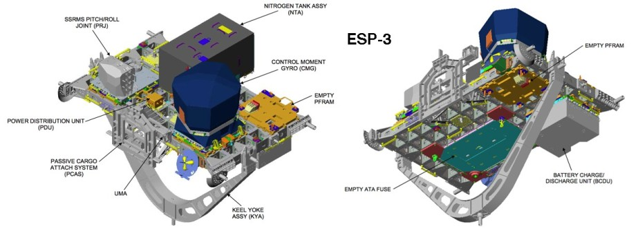
External Stowage Platform 3. [ESP-3] was based on the deployable version of the Integrated Cargo Carriers [ICC], which was designed to transport un-pressurized cargo inside the U.S Space Shuttle's cargo bay. It was initially installed on the P3 Truss Segment of the ITS during the Shuttle mission STS-118 (Flight 13A.1) in 2007.
ESP-3 was the first major station element to be installed completely by robotics, using only the shuttle and station's robotic arms, an external berthing camera system (BCS) and a Photovoltaic Radiator Grapple Fixture (PVRGF).
In 2010 ESP-3 was moved to the bottom of S3 truss segment of the ITS. It was grappled by the stations robotic arm and transferred down the ITS on the mobile transporter [MT]. This cleared the way for ExPRESS Logistics Carrier-3 [ELC-3] to be installed later.
ESP-3 is the same size as ESP-2 with two grapple fixtures, hand rails, tether attachment points and foot restraints for astronauts.
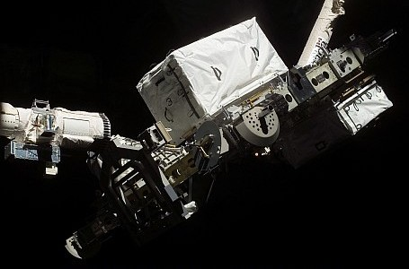
ESP-3 Installation (STS-118 mission)
Attachment Sites
ESP-3 has seven attachment sites for ISS spare parts and assemblies (ORUs):
FRAM-1 (top side) Pitch/roll joint launched with U.S. Shuttle's STS-118 (Flight 13A.1) on ESP-3. FRAM-2 (top side) Flex Hose Rotary Coupler (FHRC) added by U.S. Shuttle's STS-126 (Flight ULF2). FRAM-3 (top side) empty (future home of failed PM currently stored on the MBS POA). FRAM-4 (top side) Linear Drive Unit (LDU) added by U.S. Space Shuttle's STS-127 (Flight 2J/A) crew. FRAM-5 (keel side) Space-to-Ground Antenna (SGANT) added by U.S. Space Shuttle's STS-127 (Flight 2J/A) crew. FRAM-6 (keel side) Battery Charge/Discharge Unit (BCDU) launched with U.S. Space Shuttle's STS-118 (Flight 13A.1) on ESP-3. FRAM-7 (keel side) ATA Flight Support Equipment (FSE) added by U.S. Space Shuttle's STS-118 (Flight 13A.1) crew.
ExPRESS logistics carriers [ELCs] are un-pressurized pay load platforms attached to the station's Integrated Truss Structure [ITS].
(ExPRESS stand for Expedite the Processing of Experiments to the Space Station)
ELCs have two main functions:
1. Provide mechanical mounting surfaces, electrical power, and command and data handling services for Orbital Replacement Units (ORUs). These are mounted on Flight Releasable Attachment Mechanisms [FRAMs].
2. Provide scientists with platforms and infrastructure to deploy experiments in the vacuum of space without requiring a separate dedicated Earth-orbiting satellite. Experiments are mounted on ExPRESS pay load adapters (ExPA) which are about the same size as the FRAMS.
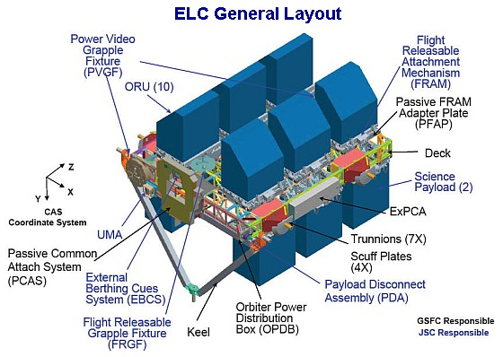
Development
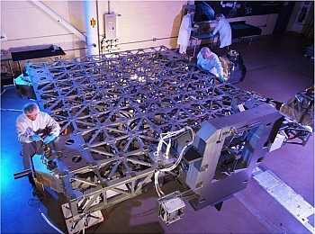
ELC Fabrication at Goddard Space Flight Center
The ELCs were developed primarily at the Goddard Space Flight Center in Greenbelt, Maryland, USA with support from NASA's Johnson Space Center (JSC), Kennedy Space Center (KSC), and Marshall Space Flight Center (MSFC).
ELCs were formerly called Express Pallets and are the un-pressurized counterpart to the pressurized ExPRESS Racks used inside the station.
ExPRESS Carrier Avionics (ExPCA)
The ExPRESS carrier avionics (ExPCA) provides electrical power distribution to experiments and data interfaces to the ISS. Within the ExPCA, the flight computer, software, and related electronics comprise its 'flight Controller Unit' (FCU).
The FCU provides the computing and communication resources as an ELC Command and Data Handling system to:-
1. Provide a low-rate data link (LRDL) interface to the station to send commands to the ELC. 2. Provide an LRDL from the ExPCA to the experiments resident on the ELC. 3. Provide a high-rate data link (HRDL) between the ELC and the ISS for experiment data. 4. Provide an Ethernet Local Area Network (LAN) between the ELC and resident experiments. 5. Support six analog input channels at each ExPRESS pay load adapter (ExPA) location. 6. Support six discrete command channels at each ExPA location.
ExPRESS Logistics Carrier 1. [ELC-1]
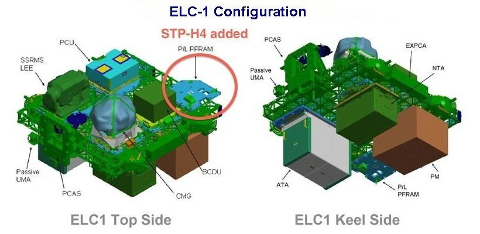
ELC-1 is located on the ITS P3 Truss Segment at the Un-pressurised Cargo Carrier Attachment System 2. (UCCAS-2), earth facing attach point. It was delivered to the station by U.S. Space Shuttle Atlantis STS-129 (Flight ULF3) in November 2009.
The configuration of ELC-1 FRAMS are:-
FRAM-1 (top side) Latching End Effector (LEE) launched on ELC-1 FRAM-2 (top side) Plasma Contactor Unit (PCU) launched on ELC-1 FRAM-3 (top side) STP-H4 (Delivered by HTV-4 Exposed Pallet and installed in Aug. 2013) FRAM-4 (top side) Battery Charger Discharge Unit (BCDU) launched on ELC-1 FRAM-5 (top side) Control Moment Gyroscope (CMG SN104) launched on ELC-1 FRAM-6 (keel side) Nitrogen Tank Assembly (NTA SN0002) launched on ELC-1 FRAM-7 (keel side) Pump Module (PM SN0007) launched on ELC-1 FRAM-8 (keel side) OPALS Pay load (Delivered by SpaceX Dragon CRS-3 and installed in 2014) FRAM-9 (keel side) Ammonia Tank Assembly (ATA) launched on ELC-1
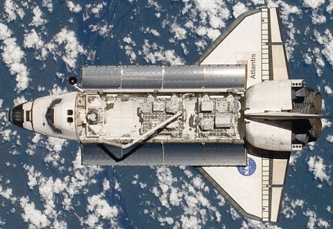
ELC-1 and 2 in the Shuttle's payload bay
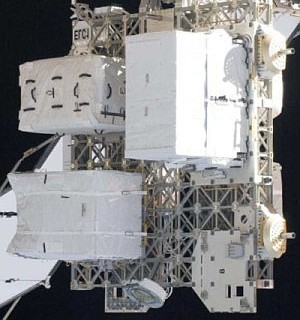
ELC-1 Installed on the ISS
ExPRESS Logistics Carrier 2. [ELC-2]
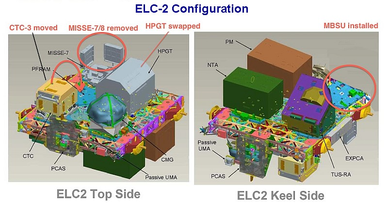
ELC-2 is located on the ITS S3 Truss Segment at the Pay load Attachment System 1 (PAS-1) (zenith, space facing) attach point. It weighs approx. 13,400 lbs. It was delivered to the station by U.S. Space Shuttle Atlantis STS-129 (Flight ULF3) in November 2009.
The configuration of ELC-2 FRAMS are:
ECL-2 Installed on the ISS
Top Side FRAM-1 DCSU installed from ESP-2 in 2013. FRAM-2 Cargo Transport Container-3 (CTC-3) launched on ELC-2 (moved from FRAM-1) FRAM-3 an ExPRESS pay load adapter (ExPA) as MISSE base. FRAM-4 High Pressure Gas Tank (HPGT) (Oxygen depleted) replaced the one on ELC-2. FRAM-5 Control Moment Gyroscope (CMG SN102) launched on ELC-2
Keel Side FRAM-6 Pump Module (0005) launched on ELC-2 FRAM-7 MBSU (delivered by HTV-4 Exposed Pallet and installed in Aug. 2013) FRAM-8 Mobile Transporter Trailing Umbilical System-Reel Assembly launched on ELC-2 FRAM-9 Nitrogen Tank launched on ELC-2
ExPRESS Logistics Carrier 3. [ELC-3]
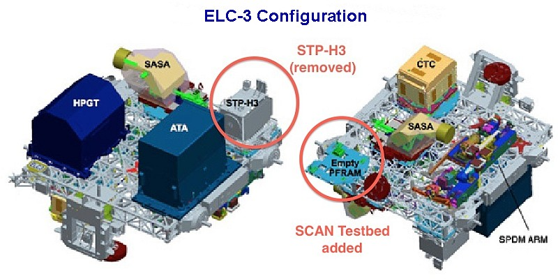
ELC-3 is located on the ITS P3 Truss Segment at the Un-pressurised Cargo Carrier Attachment System 1. (UCCAS-2) (zenith, space facing) attach point. It weighs approx. 14,023 lbs. It was delivered to the station by U.S. Space Shuttle Endeavour STS-134 (Flight ULF6) in May 2011.
All FRAMs, except FRAM-3 were launched attached to ELC-3.
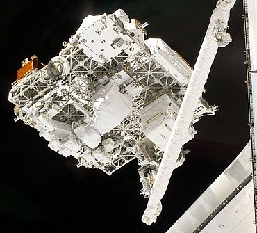
ELC-3 deployment from Shuttle
The configuration of ELC-3 FRAMS are:-
Top Side FRAM-1 Cargo Transport Container-5 (CTC-5). FRAM-2 Special Purpose Dextrous Manipulator. FRAM-3 SCAN Testbed (arrived in July 2012 via HTV-3). FRAM-4 S band Antenna Sub-System Assembly 3 (SASA-3).
Keel Side FRAM-5 Space Test Program-Houston 3 DOD experiment. FRAM-6 Ammonia Tank Assembly (ATA). FRAM-7 High Pressure Gas Tank (HPGT). FRAM-8 S band Antenna Sub-System Assembly 2 (SASA-2).
ExPRESS Logistics Carrier 4. [ELC-4]
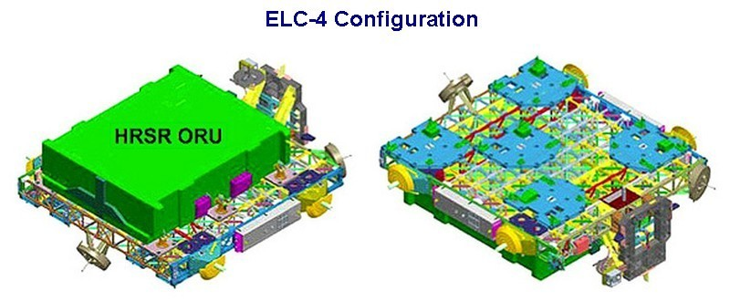
ELC-4 is located on the ITS S3 Truss Segment at the Pay load Attachment System 4 (PAS-4) (nadir, earth facing) attach point. It weighs approx. 8,235 lbs. Heat Rejection System Radiator (HRSR) launched on the top side of ELC-4. It was delivered to the station by U.S. Space Shuttle Discovery STS-133 (Flight ULF5) in February 2011.
The configuration of ELC-4 FRAMS (all on keel side) are:-
FRAM-1 Cargo Transport Container-2 (CTC-2) delivered by HTV-2 Exposed Pallet FRAM-2 empty FRAM-3 Robotic Refuelling Mission (RRM) delivered by STS-135, moved to FRAM-3. FRAM-4 Utility Transfer Assembly (delivered by HTV-4 Exposed Pallet in Aug. 2013) FRAM-5 Flex Hose Rotary Coupler delivered by HTV-2 Exposed Pallet, then moved to FRAM